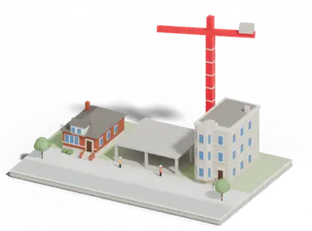
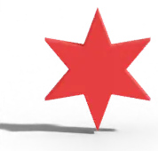
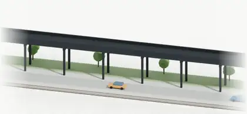

Clay motion samples
Seven small moving pieces in the clay look, so you can pick before we add any to the site. The first three are rendered in Blender frame by frame; the last four are light CSS motion on the clay pictures we already have. All of them stop for people who turn motion off on their phone or computer.
1 · Map loading
A mid-rise goes up floor by floor while the housing map loads its buildings. Would replace today's neighborhood outline loader.

Loading 485,000 Chicago buildings…28 of 77 neighborhoods2 · Page waiting
The red star turns like a coin while a page waits on data. Small enough for buttons and cards.

Loading the 2027 budget…3 · Transit loading
An L train crosses on the elevated tracks while the transit tool builds its network. Could also sit in empty states ("Draw a line to see riders").

Building today's network…4 · Opening a tool
When a section opens, its clay icons pop in one after another.
5 · Hover and tap
Cards lift, and the clay picture tips a little, when you point at them or tap.
6 · Reaching A+
The grade star stamps in and clay stars fly out. Would replace today's flat confetti.
7 · Moving between pages
The next page slides in with its clay picture as you go from one tool to another.


Preview only: this page isn't linked anywhere on the site.